For the reader
In this book I'll go over a bunch of design problems/decisions while developing the broccoli crate with performance analysis to back it up.
The source code for this book is the repo broccoli on github.
Disclaimer
All the benches in the graphs were generated on my laptop which is a quad-core dell linux laptop and all the commentary was made against those graphs. However, you can pull down github repo and generate out the benches and this book again to get results specific to your platform. But keep in mind the commentary might not make sense then.
Test Setup
Before we can measure and compare performance of this algorithm, we have to come up with a good way to test it. We often want to see how performance degrades as the size of the problem increases, but we also do not want to influence other variables.
For our tests lets use an archimedean spiral distribution. It gives us a lot of variation in how the aabbs intersects, and allows us to grow the size of the problem without affecting density too much.
If all the aabbs were dstributed along only one dimension then that would also skew our results. For example, sweep and prune will perform very well if all the aabbs are spaced out along the axis we are sweeping.
Lets make a archemdian spiral function that takes 3 inputs and produces an archimedean spiral.:
- n: the number of aabbs
- separation: the seperation between the aabbs as they are laid out along the spiral.
- grow rate: the rate at which the spiral grow outward from the center.
We increase n to increase the size of the problem. We can increase the grow rate to decrease the number of aabbs intersecting.
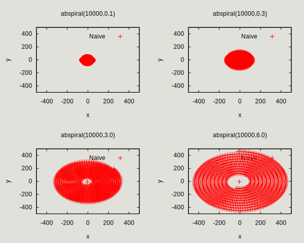While those 3 variables change the the distribution of the elements, there is another variable at play.
- aabb size (the bounding box size of each element)
For all the benching in here, we just fix the size such that every element has the same size aabb. There is still a lot of interesting data analysis to do with elements that are all different sizes, but for now we'll just analyse cases where they are all the same.
Lets define a particular scene/distribution just so that it makes are benching simpler.
Let abspiral(n,grow) be a distribution of aabbs where:
- n=number of aabbs
- grow=spiral grow rate
- separation=constant (17)
- aabb radius=constant (5)
The constants are just arbitrary values. We just want all the elements to have some bounding box size and to influence how many of them are intersecting. This just makes things simpler since for most of the benches, we can typically show trends what we want to show by only influencing these two variables, so we might as well pick constants for the other variables and imbue that in the meaning of abspiral() itself.
The below chart shows how influencing the spiral_grow affects the number of bot intersections for abspiral(). This shows that we can influence the spiral grow to see how the performance of the tree degrades. We could influence how many aabbs are colliding with changing the separation, but the relationship to the grow rate and the number of intersection pairs makes a nice smooth downward graph.
It is not entirely smooth, but it is smooth enough that we can use this function to change the load on the broccoli without having to sample multiple times.
Its also clearly not linear, but all that really matters is that we have a way to increase/decrease the number of collisions easily. We just need something that will allow us to definitively see trends in how the algorithms stack up against each other.
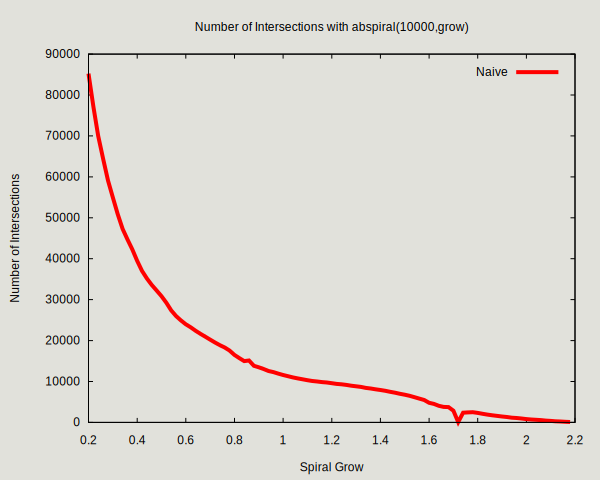Comparison against other Algorithms
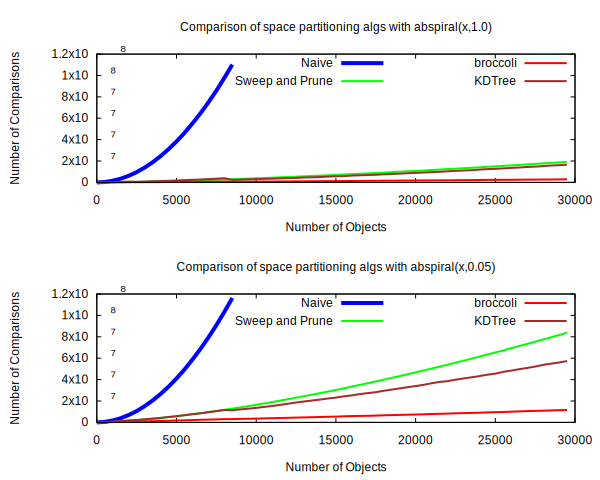 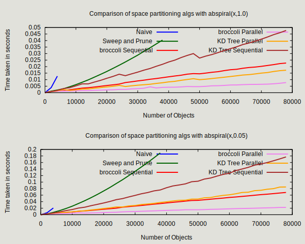The above chart compares different implementations of find_colliding_pairs both in terms of comparisons and benches. It is interesting to note that the real world bench times follow the same trend as the theoretical number of comparisons.
The jumps that you see in the theoretical broccoli line are the points at which the trees height grows. It is a complete binary tree so a slight increase in the height causes a doubling of nodes so it is a drastic change. As the number of aabbs increases it is inevitable that sometimes the tree will be too tall or too short.
It's also worth noting that the difference between sweep and prune/kdtree and naive is much bigger than the difference between sweep and prune/kdtree and broccoli. So using these simpler algorithms gets you big gains as it is. The gains you get from using broccoli are not as pronounced, but are noticeable with more elements.
In the same vein, you can see that there aren't many gains to use broccoli_par over broccoli. It can double/quadruple your performance, but as you can see those gains pale in comparison to the gains from simply using the broccoli algorithm. Thats not to say multiplying your performance by the number of cores you have isnt great, its just that it isnt a big factor. This to me means that typically, allocating effort on
investigating if your algorithm is optimal sequentially may be better than spending effort in parallelizing what you have.
The above chart shows a 3d view of the characteristics of naive, sweep and prune, and broccoli.
There are a couple of observations to make here. First, you might have noticed that the naive algorithm is not completely static with respect to the spiral grow. This is because the naive implementation I used is not 100% naive. While it does check every possible pair, it first checks if a pair of aabb's collides in one dimension. If it does not collide in that dimension, it does not even check the next dimension. So because of this "short circuiting", there is a slight increase in comparisons when the aabbs are clumped up. If there were no short-circuiting, it would be flat all across. It is clear from the graph that this short-circuiting optimization does not gain you all that much.
Another interesting observation is that these graphs show that sweep and prune has a better worst case than the broccoli. This makes sense since in the worst case, sweep and prune will sort all the elements, and then sweep. In the worst case for broccoli, it will first find the median, and then sort all the elements, and then sweep. So broccoli is slower since it redundantly found the median, and then sorted everything. However, it is easy to see that this only happens when the aabbs are extremely clumped up (abspiral(grow) where grow<=0.003). So while sweep and prune has a better worst-cast, the worst-cast scenario of broccoli is rare and it is not much worse (median finding + sort versus just sort).
It's important to note that these comparisons aren't really fair. With broccoli, we are focused on optimising the finding colliding pairs portion, but these comparisons are comparing construct + one call to finding colliding pairs. However, we can't really show a graph of just the query portion, because other algorithms can't be easily split up into a construction and query part. Perhaps a better test would be to compare multiple query calls. So for each algorithm with one set of elements, find all the colliding pairs, then also find all the elements in a rectangle, then also find knearest, etc. So it would be like a benching suite.
[Sweep and Prune] vs [KdTree] vs [KdTree + Sweep and Prune]
Sweep and prune is a simple AABB collision finding system, but it degenerates as there are more and more "false-positives" (objects that intersect on one axis, but not both). Kd Trees are great, but non-point objects that can't be inserted into children are left in the parent node and those objects must be collision checked with everybody else naivley. A better solution is to use both.
The basic idea is that you use a tree up until a specific tree height, and then switch to sweep and prune, and then additionally use sweep and prune for elements stuck in higher up tree nodes. The sweep and prune algorithm is a good candidate to use since it uses very little memory (just a stack that can be reused as you handle decendant nodes). But the real reason why it is good is the fact that the aabbs that belong to a non-leaf node in a kd tree are likely to be strewn across the divider in a line. Sweep and prune degenerates when the active list that it must maintain has many aabbs that end up not intersecting. This isnt likely to happen for the aabbs that belong to a node since the aabbs that belong to a node are guarenteed to touch the divider. If the divider partitions aabbs based off their x value, then the aabbs that belong to that node will all have x values that are roughly close together (they must intersect divider), but they y values can be vastly different (all the aabbs will be scattered up and down the dividing line). So when we do sweep and prune, it is important that we sweep and prune along axis that is different from the axis along which the divider is partitioning, otherwise it will degenetate to pratically the naive algorithm.
KD tree vs Quad Tree
The main benefit of a quad tree is that tree construction is fast since we don't need to find the median at each level. They also have a interesting relationship with z order curves.
But that comes at a cost of a potentially not great partitioning of the physical elements. Our goal is to make the querying as fast as possible as this is the part that can vary and dominate very easily in desnse/clumped up situations. The slow construction time of the kdtree is not ideal, but it is a very consistent load (doesnt vary from how clumped the elements are).
KD trees are also great in a multithreaded setting. With a kd tree, you are guarenteed that for any parent, there are an equal number of objects if you recurse the left side and the right side since you specifically chose the divider to be the median.
This means that during the query phase, the work-load will be fairly equal on both sides. It might not be truely equal because even though for a given node, you can expect both the left and right sub-trees to have an equal number of elements, they most likely will be distributed differently within each sub-tree. For example the left sub-tree might have all of its elements stuck in just one node, while the right sub-tree has all of its elements in its leaf nodes. However, the size of each sub-tree is a somewhat good estimate of the size of the problem of querying it. So this is a good property for a divide and conquer multithreaded style algorithm. With a quad tree, the load is not guarenteed to be even between the four children nodes.
Tree space partitioning vs grid
I wanted to make a collision system that could be used in the general case and did not need to be fine-tuned. Grid based collision systems suffer from the teapot-in-a-stadium problem. They also degenerate more rapidly as objects get more clumped up. If, however, you have a system where you have strict rules with how evenly distributed objects will be among the entire space you're checking collisions against, then I think a grid system can be better. But I think these systems are few and far in between. I think in most systems, for example, its perfectly possible for all the objects to exist entirely on one half of the space being collision checked leaving the other half empty. In such a case, half of the data structure of the grid system is not being used to partition anything. There are also difficulties in how to represent the data structure since every grid cell could have a variable number of aabbs in side of it. Having a Vec in each cell, for example, would hardly be efficient.
The way liquid fun does collisions by using grids in one dimension and sweep and prune in the other.
broccoli vs BVT
I'm not sure how broccoli stacks up against a bounding volume tree. This is something I would like to investigate in the future. It would be interesting to compare against bottom up and top down constructions of BVT seeing as KD Tree are top down by nature.
Rebalancing vs Querying
The below charts show the load balance between the construction and querying through calling
find_colliding_pairs on the broccoli.
It's important to note that the comparison isnt really 'fair'. The cost of querying depends a lot on
what you plan on doing with every colliding pair (it could be an expensive user calculation). Here we just use a 'reasonably' expensive calculation that repels the colliding pairs.
Some observations:
- The cost of rebalancing does not change with the density of the objects
- If the aabbs are spread out enough, the cost of querying decreases enough to be about the same as rebalancing.
- The cost of querying is reduced more by parallelizing than the cost of rebalancing.
It makes sense that querying in more 'parallelizable' than rebalancing since the calculation that you have to perform for each node before you can divide and conquer the problem is more expensive for rebalancing. For rebalancing you need to find the median and bin the aabbs. For querying you only have to do sweep and prune.
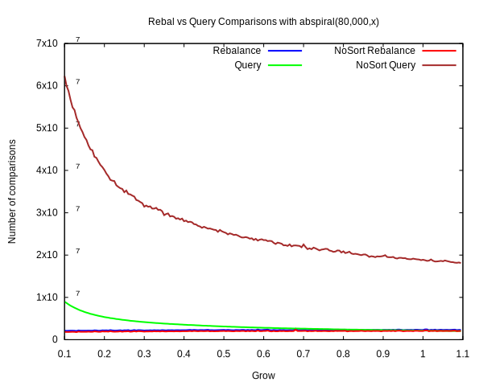 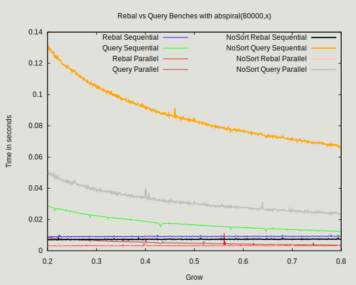 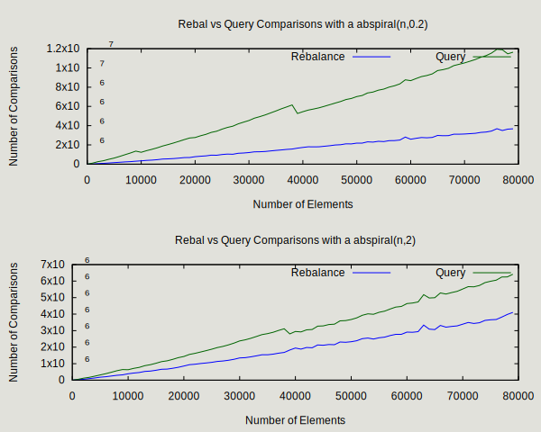 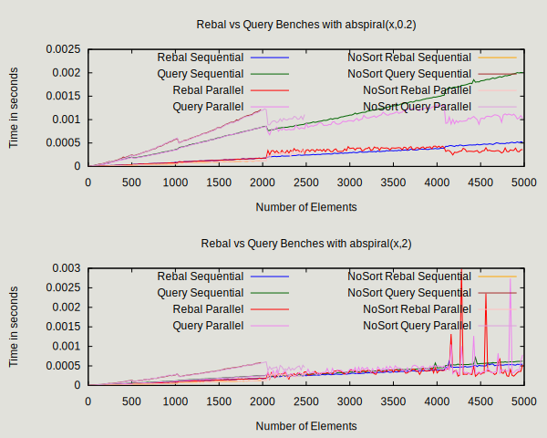Collect Performance
Sometimes you need to iterate over all colliding pairs multiple times even though the elements havent moved.
You could call find_colliding_pairs() multiple times, but it is slow.
Broccoli provides functions to save off query results so that they can be iterated on though TreeRefInd.
The above graph shows the performance of collect_colliding_pairs() and collect_colliding_pairs_par(). These functions generate lists of colliding pairs. The graph shows only the time taken to construct the lists.

The above graph shows the performance of iterating over the pairs collected from calling collect_colliding_pairs() and collect_colliding_pairs_par(). The parallel version returns multiple disjoint pairs that can be iterated on in parallel. Notice that it is much faster to iterate over the pre-found colliding pairs when compared to the earlier chart. The graph makes it obvious that there are gains to iterating over disjoint pairs in parallel, but keep in mind that the times we are looking at are extremely small to begin with.
So as you can see, you pay a small cost, for collecting the colliding pairs, but then you are able to iterate over them over and over again faster.
Construction Cost vs Querying Cost
If you are simulating moving elements, it might seem slow to rebuild the tree every iteration. But from benching, most of the time querying is the cause of the slowdown. Rebuilding is always a constant load, but the load of the query can vary wildly depending on how many elements are overlapping.
Any kind of heuristics or caching strategy to speed up construction will result in a less optimal partitioning of the space which the querying side will pay for. Therefore it is not worth it. Instead we can focus on speeding up the construction of an optimal partitioning. This can be done via parallelism. Sorting the aabbs that sit on dividing lines may seem slow, but we can get this for 'free' essentially because it can be done after we have already split up the children nodes. So we can finish sorting a node while the children are being worked on. Rebuilding the first level of the tree does take some time, but it is still just a fraction of the entire building algorithm in some crucial cases, provided that it was able to partition almost all the aabbs into two planes.
For example, in a bench where inside of the collision call-back function I do a reasonable collision response with 80_000 aabbs, if there are 0.8 times (or 65_000 ) collisions or more, querying takes longer than rebuilding. For your system, it might be impossible for there to even be 0.8 * n collisions, in which case building the tree will always be the slower part. For many systems, 0.8 * n collisions can happen. For example if you were to simulate a 2d ball-pit, every ball could be touching 6 other balls Circle Packing. So in that system, there are around 3 * n collisions. So in that case, querying is the bottle neck. With liquid or soft-body physics, the number can be every higher. up to n * n.
Additionally, we have been assuming that once we build the tree, we are just finding all the colliding pairs of the elements. In reality, there might be many different queries we want to do on the same tree. So this is another reason we want the tree to be built to make querying as fast as possible, because we don't know how many queries the user might want to do on it. In addition to finding all colliding pairs, its quite reasonable the user might want to do some k_nearest querying, some rectangle area querying, or some raycasting.
Inserting elements after construction
broccoli does not support inserting elements after construction. If you want to add more elements, you have to rebuild the tree. In most usecases, I think you want to do this anyway. In a dynamic particle system for example, most of the time, enough particles move about in one step to justify recreating the whole tree. Trying to avoid this using loose bounding boxes can make querying take longer as there are more intersections to detect than necessary.
Exploiting Temporal Locality (with loose bounding boxes)
The main reason against exploiting temporal locality is that adding any kind of "memory" to the tree where you save the positions of the dividers to use as good heuristic positions for next iterations will come at a cost of a less optimal tree layout which will hurt the query algorithm. Our goal is to make the query algorithm as fast as possible since that is what can dominate.
One strategy to exploit temporal locality is by inserting looser bounding boxes into the tree and caching the results of a query for longer than one step. The upside to this is that you only have to build and query the tree every couple of iterations. There are a number of downsides, though:
-
Your system performance now depends on the speed of the aabbs. The faster your aabbs move, the bigger their loose bounding boxes, the slower the querying becomes. This isnt a big deal considering the ammount that a bot moves between two frames is expected to be extremely small. But still, there are some corner cases where performance would deteriorate. For example, if every bot was going so fast it would just from one end of you screen to the other between world steps. So you may also need to bound the velocity of your aabbs to a small value.
-
You have to implement all the useful geometry tree functions all over again, or you can only use the useful geometry functions at the key world steps where the tree actually is constructed. For example, if you want to query a rectangle area, the tree provides a nice function to do this, but you only have the tree every couple of iterations. The result is that you have to somehow implement a way to query all the aabbs in the rectangle area using your cached lists of colliding aabbs, or simply only query on the world steps in which you do have the built tree. Those queries will also be slower since you are working on a tree with loose boxes.
-
Every bot needs to have a member variable that is its index. This isnt ideal to have since its redundant information. You can figure out a aabbs index from its position within the list fed into the tree. So it is just wasted space. For a very intestive algorithms like collision querying, having the memory footprint being operated being small is crucial. We can't rely on pointer offsets to determine the indicies of which aabbs are colliding when using the tree since we reordered the aabbs directly to make the tree to avoid a level of indirection. This increases the separation between the other fields.
-
The maximum load on a world step is greater. Sure amortised, this caching system may save computation, but the times you do construct and query the tree, you are doing so with loose bounding boxes. On top of that, while querying, you also have to build up a seperate data structure that caches the colliding pairs you find.
-
The api of the broccoli is flexible enough that you can implement loose bounding box + caching on top of it (without sacrificing parallelism) if desired.
So in short, this system doesnt take advantage of temporal locality, but the user can still take advantage of it by inserting loose bounding boxes and then querying less frequently to amortize the cost.
Expoiting Temporal Locality (caching medians)
I would love to try the following: Instead of finding the median at every level, find an approximate median. Additionally, keep a weighted average of the medians from previous tree builds and let it degrade with time. Get an approximate median using median of medians. This would ensure worst case linear time when building one level of the tree. This would allow the rest of the algorithm to be parallelized sooner. This would mean that query would be slower since we are not using heuristics and not using the true median, but this might be a small slowdown and it might speed of construction significatly.
Exploting Temporal Location (moving dividers with mass)
For a while I had the design where the dividers would move as thoought they had mass. They would gently be pushed to which ever side had more aabbs. Dividers near the root had more mass and were harder to sway than those below. The problem with this approach is that the divider locations will mostly of the time be sub optimial. And the cost saved in rebalancing just isnt enough for the cost added to querying with a suboptimal partitioning. By always partitioning optimally, we get guarentees of the maximum number of aabbs in a node. Remember querying is the bottleneck, not rebalancing.
Level Comparison
The below charts show the load balance between the different levels of the tree.
Tree construction is compared against one call to find_colliding_pairs.
Some observations:
- The cost of rebalancing the first level is the most erratic. This is because in some cases we're hitting the worst cases of pdqselect. I like to think of the algorithm as a sponge and the problem as water seeping through it. First you you have coarse filtering, then it gets more precise.
- The load goes from the top levels to the bottom levels as the aabbs spread out more.
- The load on the first few levels is not high unless the aabbs are clumped up.
- The leaves don't have much work to do since aabbs have a size, they aren't likely to into a leaf.
Evenness of load
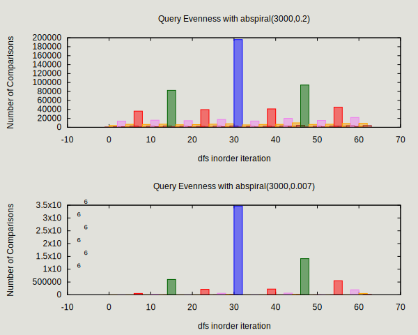 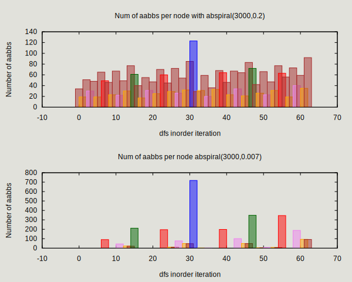The above two charts shows that the work load is pretty even between the left and right recursing of the algorithm. As aabbs get more clumped up, the right side starts to dominate more. I'm not sure why this is, but I do know that picking the median based off of the right and bottom of the aabbs instead of left and top makes no difference in this case. I think this particular distribution becomes not so uniform when the aabbs are extremely clumped up.
Semi-Direct vs Direct vs Indirect
Below are a bunch of diagrams that highlight differences between a couple variables: Whether the elements inserted into the tree are made up of:
(Rect<Num>,&mut T)(Semi-Direct)(Rect<Num>,T)(Direct)&mut (Rect<Num>,T)(Indirect)
We also vary the size of T (8,16,32,128,or 256 bytes).
We do not bother varying the size of Num since we assume the user is using a
'normal' sized number type like a float or an integer.
We bench construction as well as one call to find_colliding_pairs.
We define a more specialized abspiral(), abspiral-isize() that takes an additonal
argument which influnces the size of T.
There are a couple of observations to make.
- Semi-Direct is the best all-around.
- Direct is sometimes slightly faster then Semi-Direct at querying, but the slowest at construction
- Indirect isn't far behind Semi-Direct, but suffers in some high density distributions.
- Direct is greatly influenced by the size of
T.
 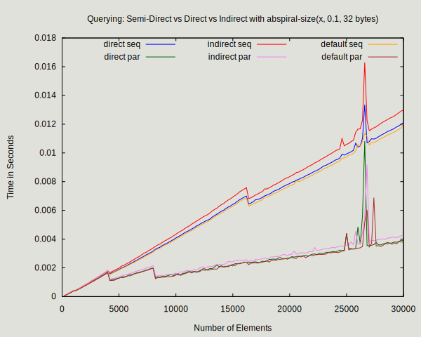
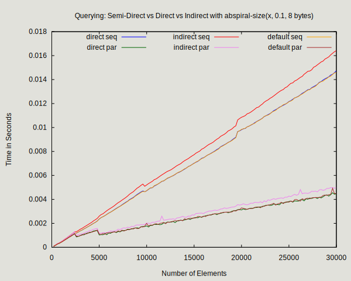
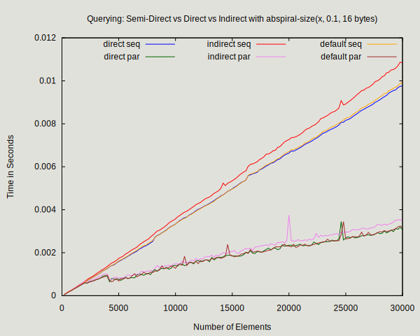
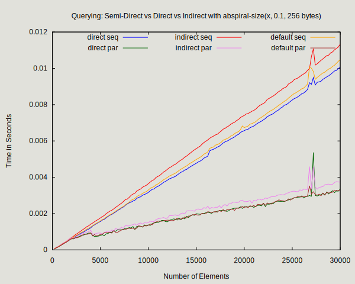
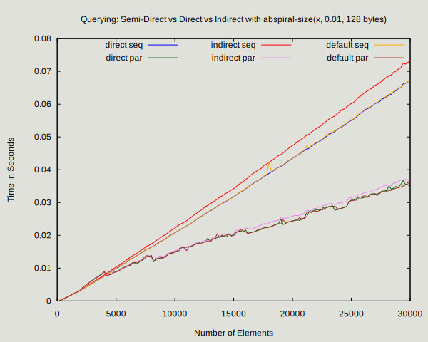
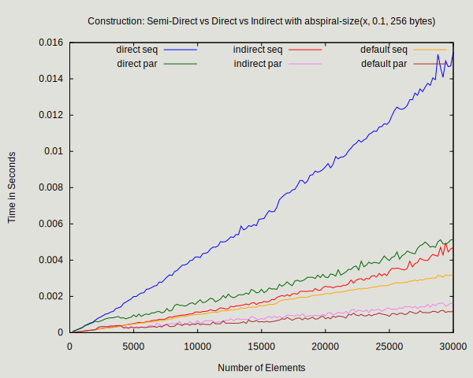
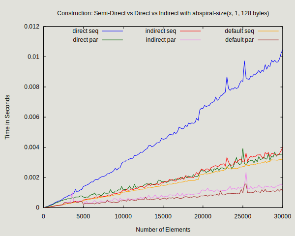
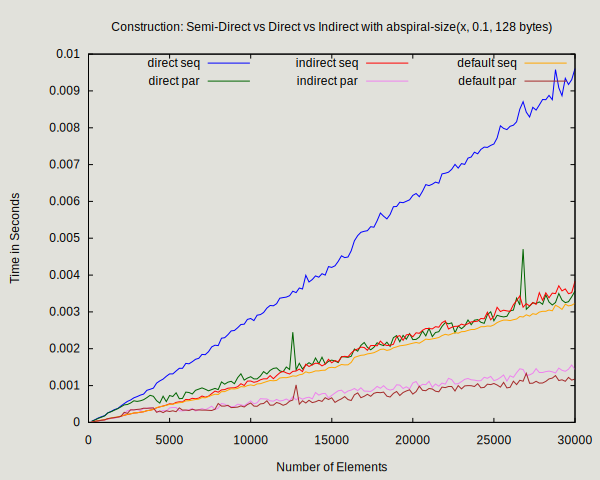
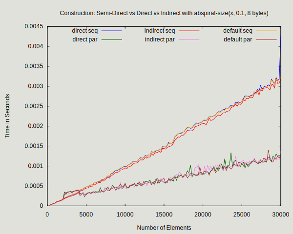
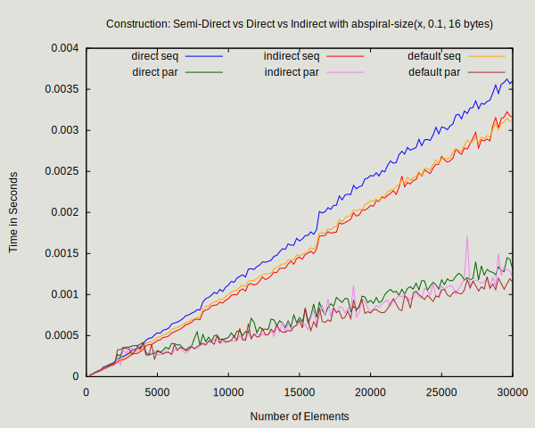
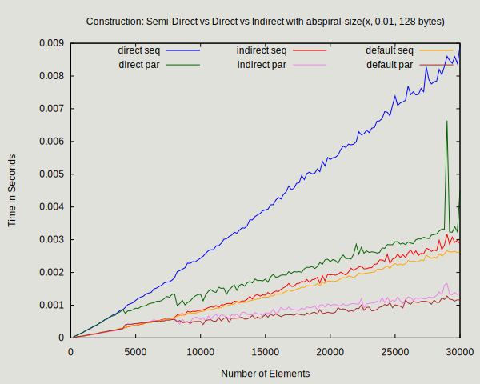
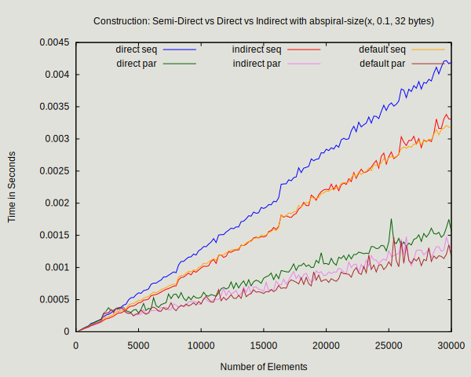
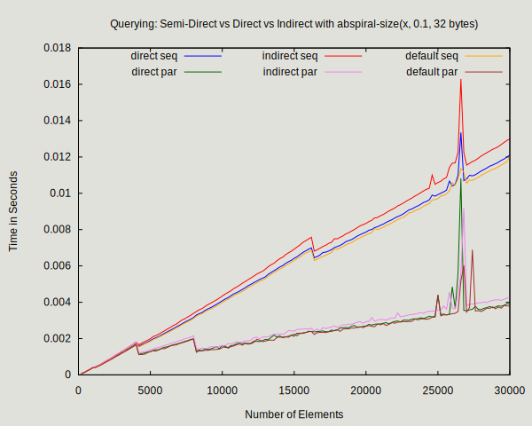
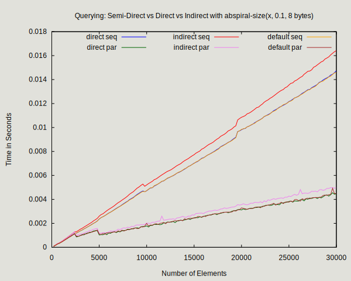
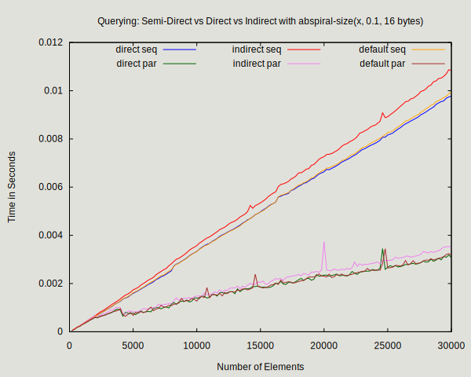
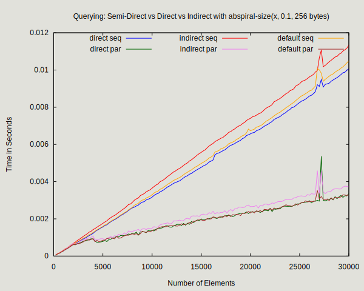
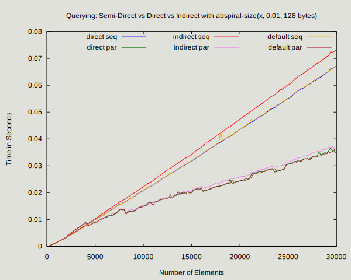
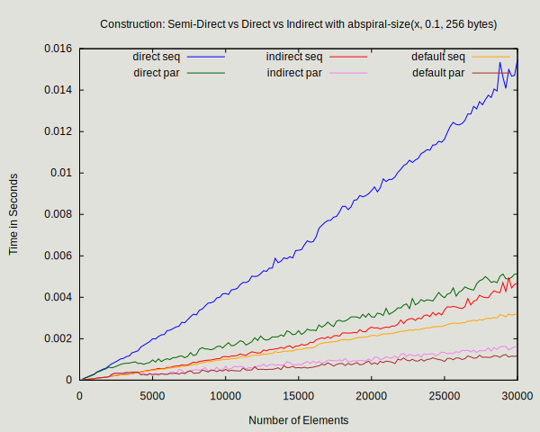
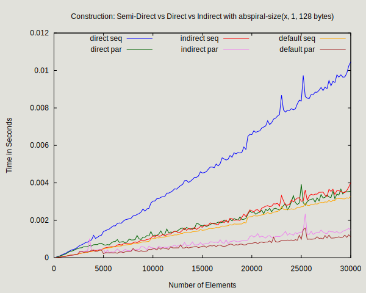
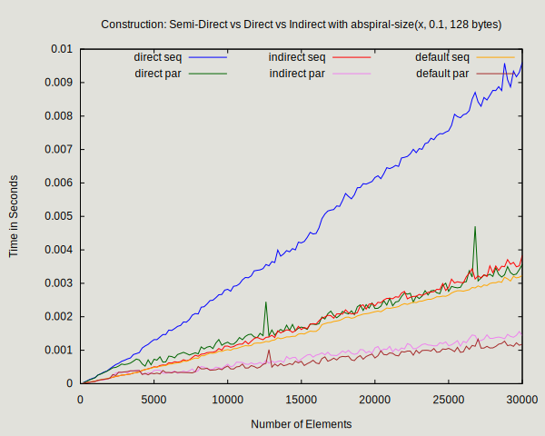
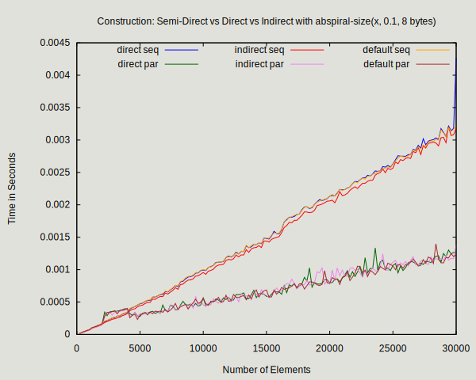
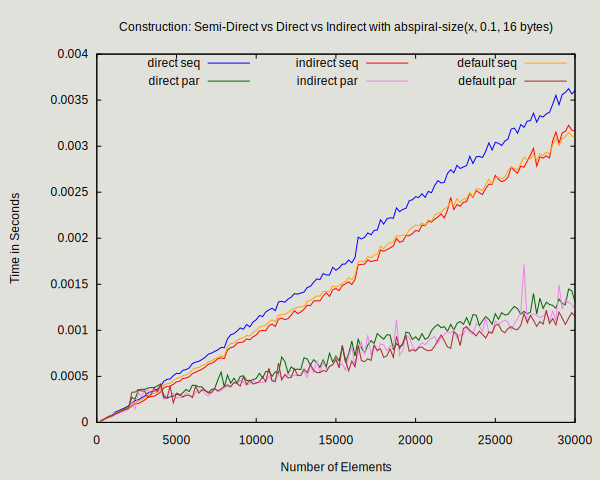
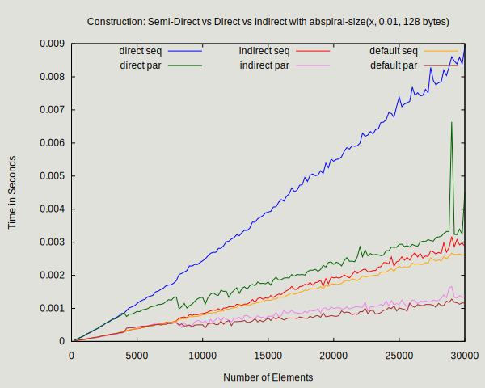
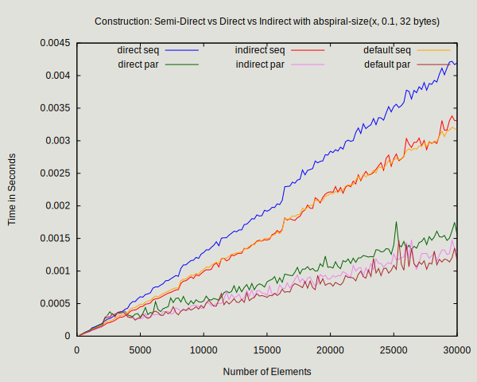
Different Data Layouts
There are three main datalayouts for each of the elements in a broccoli that are interesting:
(Rect<isize>,&mut T)
(Rect<isize>,T)
&mut (Rect<isize>,T)
Because the tree construction code is generic over the elements that are inserted (as long as they implement Aabb), The user can easily try all three data layouts.
The default layout is almost always the fastest. There are a few corner cases where if T is very small, and the aabbs are very dense, direct is faster, but it is marginal.
The default layout is good because during broccoli construction and querying we make heavy use of aabb's, but don't actually need T all that much. We only need T when we actually detect a collision, which doesnt happen that often. Most of the time we are just ruling out possible colliding pairs by checking their aabbs.
Yes the times we do need T could lead to a cache miss, but this happens infrequently enough that that is ok. Using the direct layout we are less likely to get a cache miss on access of T, but now the aabbs are further apart from each other because we have all these T's in the way. It also took us longer to put the aabb's and T's all together in one contiguous memory.
One thing that is interesting to note is that if T has its aabb already inside of it, then (Rect<isize>,&mut T) duplicates that memory. This is still faster than &mut (Rect<isize>,T), but it still feels wasteful. To get around this, you can make it so that T doesnt have the aabb inside of it, but it just has the information needed to make it. Then you can make the aabbs as you make the (Rect<isize>,&mut T) in memory. So for example T could have just in it the position and radius. This way you're using the very fast tree data layout of (Rect<isize>,&mut T), but at the same time you don't have two copies of every objects aabb in memory.
If we were inserting references into the tree, then the original order of the aabbs is preserved during construction/destruction of the tree. However, for the direct layout, we are inserting the actual aabbs to remove this layer of indirection. So when are done using the tree, we want to return the aabbs to the user is the same order that they were put in. This way the user can rely on indicies for other algorithms to uniquely identify a bot. To do this, during tree construction, we also build up a Vec of offsets to be used to return the aabbs to their original position. We keep this as a seperate data structure as it will only be used on destruction of the tree. If we were to put the offset data into the tree itself, it would be wasted space and would hurt the memory locality of the tree query algorithms. We only need to use these offsets once, during destruction. It shouldnt be the case that all querying algorithms that might be performed on the tree suffer performance for this.
AABB vs Point + radius
Point+radius pros: less memory (just 3 floating point values) cons: can only represent a circle (not an oval) have to do more floating point calculations durying querying
AABB pros: no floating point calculations needed during querying. can represent any rectangle cons: more memory (4 floating point values)
Note, if the size of the elements is the same then the Point+radius only takes up 2 floating point values, so that might be better in certain cases. But even in this case, I think the cost of having to do floating point calculations when comparing every bot with every other bot in the query part of the algorithm is too much. With a AABB system, absolutely no floating point calculations need to be done to find all colliding pairs.
AABB data layout
The aabb we use is made up of ranges that look like : start,end instead of start,length. If you define them as a start and a length then querying intersections between rectangles requires that you do floating point arithmatic. The advantage of the start,end data layout is that all the broccoli query algorithms don't need to do a single floating point calculation. It is all just comparisons. The downside, is that if you want the dimentions on the aabb, you have to calculate them, how this isnt something that any of the tree algorithms need.
Leaves as unique type, vs single node type.
The leaf elements of the tree data structure don't need as much information as their parent nodes. They don't have dividers. So half of the nodes of the data structure haa a field that store no information. It can be tempting to give the leaf nodes a seperate type to improve memory usage, but the divider size is small, and the number of nodes in general is relaviely small compared to the number of aabbs. The leaves would also have to live in their own contrainer (or you'd have to deal with alignment problems), which would lead to more complexity while iterating down the tree.
Tree structure data seperate from elements in memory, vs intertwined
There is a certain appeal to storing the tree elements and tree data intertwined in the same piece of contiguous memory. Cache coherency would be improved since there is very little chance that the tree data, and the elements that belong to that node are not in the same cache block. But there is added complexity. Because the elements that are inserted into the tree are generic, the alignment of the objects may not match that of the tree data object. This would lead to wasted padded space that must be inserted into the tree to accomodate this. Additionally, while this data structure could be faster at querying, it would be slower if the user just wants to iterate through all the elements in the tree. The cache misses don't happen that often since the chance of a cache miss only happens on a per node basis, instead of per element. Moreover, I think the tree data structue itself is very small and has a good chance of being completely in a cache block.
Dfs in-order vs Dfs pre-order vs Bfs order.
The main primitive that they use is accessing the two children nodes from a parent node. Fundamentally, if I have a node, I would hope that the two children nodes are somewhat nearby to where the node I am currently at is. More importantly, the further down the tree I go, I would hope this is more and more so the case (as I have to do it for more and more nodes). For example, the closeness of the children nodes to the root isnt that important since there is only one of those. On the other hand, the closeness of the children nodes for the nodes at the 5th level of the tree are more important since that are 32 of them.
So how can we layout the nodes in memory to achieve this? Well, putting them in memory in breadth first order doesnt cut it. This achieves the exact opposite. For example, the children of the root are literally right next to it. On the other hand the children of the most left node on the 5th level only show up after you look over all the other nodes at the 5th level. It turns out in-order depth first search gives us the properties that we want. With this ordering, all the parents of leaf nodes are literally right next to them in memory. The children of the root node are potentially extremely far apart, but that is okay since there is only one of them.
Dfs in order uses more memory during construction from during recursion, but it gives you the nice property of the following: If a node is to the left of another node in space, then that node is to the left of that node in memmory.
Dfs pre-order and post-order might be more cache friendly. The these layouts, there is just one memory segment that shrinks in size as you recurse.
Comparison of Tree Height
The below charts show the performance of building and querying colliding pairs when manually selecting a height other than the default one chosen. You can see that the theory is a downward curve, but the benching is more of a bowl. Theory would tell us to have a big enough height such that every leaf node had only one bot in it. But in the real world, this is overhead due to excessive recursive calls. Its not that pronounced, and I think it is because most of the aabbs don't make it to the bottom of the tree anyway. Most will intersect a divider somewhere in the tree. If we used smaller aabbs it might be more pronounced.
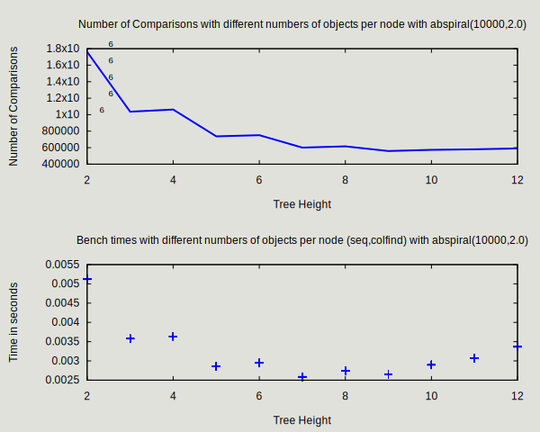ODD vs Even height trees.
In the above graph, the even heights are barely better than the odds. This is because with odd trees, the direction that the root nodes aabbs are sorted is the same as the leaves. If its even the are different. When the direction's match, we can use sweep and prune to speed things up. When the directions don't match, its hopefuly. The sorted property can't be exploited since they are in different dimensions.
The below chart compares the empirically best height against the height that our heuristic tree height function produces.
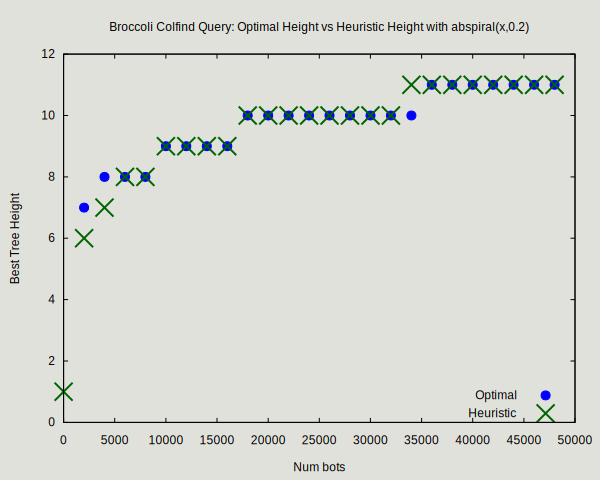Comparison of Parallel Height
The below chart shows the performance of the broccoli tree for different levels at which to switch to sequential. Obviously if you choose to switch to sequential straight away, you have sequential tree performance.
This was benched on a laptop with 4 physical cores. This means that if you just parallelize one level of the kdtree, you're only taking advantage of two of the 4 cores. This explains the time it took when we switched at level 8 vs 9.
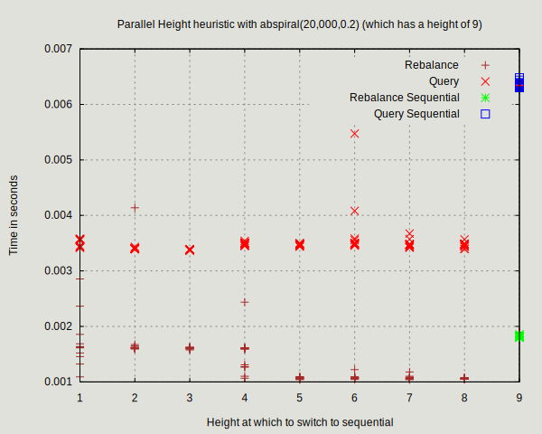Bounds checking vs no bounds checking
This shows the difference between using array indexing with and without bounds checking / unsafe. As you can see there is basically no difference. So there is literally no point in trying to avoid indexing because of the possibility of panicking.
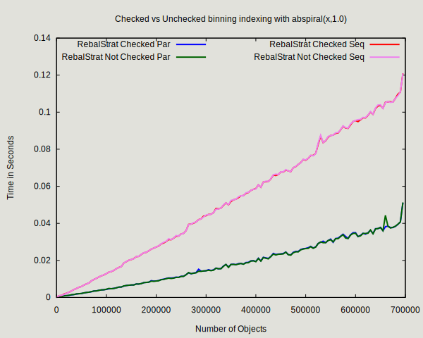Comparison of primitive types
The below chart shows performance using different primitive types for the aabbs. Notice that once parallelism is brought in, the differences between the types is not as big.
You can see that it can be slightly faster to spend the time to convert the floats to integers, than to use floats. This might not be true on all CPU architectures that might have better floating point hardware acceleration. However, intuitively, it makes sense for integer comparisons to be faster as there is just less work to do. A float is made up of a exponent and a mantisa, both of which are numbers that need to be compared against another float. An integer is just one number.
You could also covert floats to u16. This way an entire Rect<u16> is only 64bits big. You loose some precision, but provided that you round up such that your bounding boxes are only ever slightly too big, this likely isnt a problem. We are using this tree for broad-phase collision detection - its already not precise. So why not use an imprecise number type if we are just trying to broadly determine colliding pairs.
If you do convert your floats to integers, make sure to normalize it over all possible values of the integer to make it as accurate as possible. If it is important to you to not miss any interesections, then you'd also have make sure that the rouding is conservative always producing a bounding box that is slightly bigger than it needs to be.
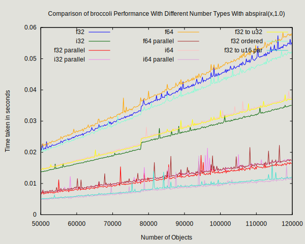Ord vs Partial-Ord
As any rust user eventually learns, the floating point standard doesnt provide a total ordering of floats.
This makes it impossible to implement a true max() or min() function. Rust's floating point primitive types
only implement PartialOrd and not Ord, requiring that the user specify what to do in cases where there is no
clear comparison when using functions like max.
broccoli construction and query requires sorting or finding the max and min at various times. There are basically 3 ways to handle floating points.
-
Enforce
Ord- Impossible for the user to incorrectly use the tree.
- Cumbersome for the user to use wrapper types like
NotNanorOrderedFloat - Wrapper types can incur performance hits.
OrderedFloathas a slightly more expensive comparisonNotNancan introduce error paths making auto-vectorization not possible.
-
Require
PartialOrdand panic on failure- Impossible for the user to incorrectly use the tree.
- Performance hit from extra checks and error paths in the query algorithms themselves.
-
Require
PartialOrdand silently fail.- No performance hit
- Flexible to user.
- User can still opt into static checking by passing their own wrapper types.
- User could mis-use the tree. They need to be cognizant that they are not passing NaN values if they are opting out of using a wrapper type.
For a long time I used the first option, but have since moved to the last option. Mainly because it makes the code using this crate much more egronomic and easier to read since there is no need to juggle a wrapper type.
Forbidding the user from violating the invariants of the tree statically
We want the user to be able to mutate the elements directly in the tree, but we also do not want to let them mutate the aabb's of each of the elements of the tree. Doing so would mean we'd need to re-construct the tree.
So when iterating over the tree, we can't return &mut T. So to get around that, there is PMut<T> that wraps around a &mut T and hides it but allows the user to access a mutable inner part, and a read-only aabb part.
So that makes the user unable to get a &mut T, but even if we just give the user a &mut [PMut<T>] where is another problem. The user could swap two node's slices around. So to get around that we use PMut<[T]> and PMutIter<T>.
But there is still another problem, we can't return a &mut Node either. Because then the user could swap the entire node
between two nodes in the tree. So to get around that we have a PMut<Node> that wraps around a &mut Node.
So that's alot of work, but now the user is physically unable to violate the invariants of the tree at compile time and at the same time we do not have a level of indirection.
The downside to this static protection is the loss of the nice syntactic sugar using a regular &mut T would provide. The user has to manually extract the mutable inner part by calling unpack_inner().
Knowing the axis at compile time
A problem with using recursion on an kd tree is that every time you recurse, you have to access a different axis, so you might have branches in your code. A branch predictor might have problems seeing the pattern that the axis alternate with each call. One way to avoid this would be to handle the nodes in bfs order. Then you only have to alternate the axis once every level. But this way you lose the nice divide and conquer aspect of splitting the problem into two and handling those two problems concurrently. So to avoid, this, the axis of a particular recursive call is known at compile time. Each recursive call, will call the next with the next axis type. This way all branching based off of the axis is known at compile time.
A downside to this is that the starting axis of the tree must be chosen at compile time. It is certainly possible to create a wrapper around two specialized versions of the tree, one for each axis, but this would leads to alot of generated code, for little benefit. Not much time is spent handling the root node anyway, so even if the suboptimal starting axis is picked it is not that big of a deal.
Mutable vs Read-Only api
We could have just exposed read only versions of all the query functions where functions like
find_all_colliding_pairs just returned a read only reference instead of a mutable reference.
You could still use this api to mutate things by either inserting indexes or pointers. If you inserted
indicies, then you would need to use unsafe to get mutable referneces to both elements simultaniously
in an array since the fact that both indicies are distinct and don't alias is not known to the compiler.
If you inserted pointers, then you would need to use unsafe to cast them to mutable references.
So having to use unsafe is a downside.
An upside is that you would be able to run multiple raycast() function queries simulaniously, for example.
The main downside is loss of flexibility in cases where you want to store the actual elements inside the tree instead of just pointers or indicies. In those cases, you obviously need mutable references to each element.
Mutable vs Mutable + Read-Only api
Ideally, there would be both a find_all_colliding_pairs and a find_all_colliding_pairs_mut.
A lot of the query algorithms don't actually care what kind of reference is in the tree. They don't actually mutate the elements, they just retrieve them.
In this way, it would be nice if the query algorithms were generic of the type of reference they held. This way you could have a raycast(&mut Tree) function that allows you to mutate the elements it finds, or you could have a rayacst(&Tree) function that allows you to call it multiple times in parallel.
To do this you can go down one of two paths, macros or generic associated types. GATs don't exist yet, and macros are hard to read and can be a head ache. Check out how rust reuses code between Iter and IterMut for slices for an example of macro solution. So for now, we will just support mutable api.
A good article about GATs can be found here.
Making Aabb an unsafe trait vs Not
Making 'Aabb' unsafe allows us to make some assumptions that lets us do others things safely. If rust had trait member fields we could avoid unsafe.
The key idea is the following: If two rectangle queries do not intersect, then it is guarenteed that the elements are mutually exclusive. This means that we can safely return mutable references to all the elements in the first rectangle, and all the elements in the second rectangle simultaneously.
For this to work the user must uphold the contract of Aabb such that the aabb returned is always the same while it is inserted in the tree.
This is hard for the user not to do since they only have read-only reference to self, but still possible using
RefCell or Mutex. If the user violates this, then despite two query rectangles being mutually exclusive,
the same bot might be in both. So at the cost of making HasAabb unsafe, we can make the MultiRect Api not unsafe.
Algorithm overview:
Construction
Construction works as follows, Given: a list of elements.
For every node we do the following:
- First we find the median of the remaining elements (using pattern defeating quick select) and use its position as this nodes divider.
- Then we bin the aabbs into three bins. Those strictly to the left of the divider, those strictly to the right, and those that intersect.
- Then we sort the aabbs that intersect the divider along the opposite axis that was used to finding the median. These aabbs now live in this node.
- Now this node is fully set up. Recurse left and right with the aabbs that were binned left and right. This can be done in parallel.
Finding all colliding pairs
Done via divide and conquer. For every node we do the following:
- First we find all intersections with aabbs in that node using sweep and prune..
- We recurse left and right finding all aabbs that intersect with aabbs in the node. Here we can quickly rule out entire nodes and their decendants if a node's aabb does not intersect with this nodes aabb.
- At this point the aabbs in this node have been completely handled. We can safely move on to the children nodes and treat them as two entirely seperate trees. Since these are two completely disjoint trees, they can be handling in parallel.
How to handle parallel cases
Part of the colliding pair finding algorithm requires that we find all colliding pairs between two nodes. Some times the aabbs between two nodes are sorted along the same dimension and sometimes not. When they are we have three options that all sound pretty good:
- Option 1:
- Use just one stack of active list
- Aabbs are kept in the active list longer than normal
- More comparisons, but simple and only uses one vec
- Option 2:
- Use two active lists.
- Fewest comparisons
- Needs two vecs.
- Option 3:
- Use two active lists, but implement it as one vec under the hood.
- Fewest allocations
- Fewest comparisons
- Slow to push and truncate each vec since it requires shuffling things around.
I went with option 3. The performance hit from pushing and truncating can be made up with a big allocation up front. Doing two big allocations upfront for option2 is wasteful.
How to speed up perpendicular cases
Its slow to naively find intersections between the aabbs in two nodes that are sorted along different dimensions. There are a couple of options:
-
Option 1:
- Cut off each list by using the other node's bounding box to deal with smaller lists.
- Now iterate over each element, and perform parallel sweep where one list has size one.
-
Option 2:
- Cut off each list by using the other node's bounding box to deal with smaller list.
- Collect a list of pointers of one list.
- Sort that list along the other lists axis
- Perform parallel sweep
Turns out these both appear to be about the same, if we adjust the target number of aabbs for node. Option2 prefers like 64 aabbs, while option2 prefers a smaller amount like 32. Because of this I chose option2 since it does not require any special dynamic allocation.
Profiling Construction + Finding all colliding pairs.
Here are some profiling results finding all intersections on abspiral(0.2,50_000) 30 times.
The image below is a SVG image and is interactive. Hover over blocks to see the full names.
Try this link for a full page view of the image (or if it is not rendering correctly): SVG
{kind=link}
The flame graph shows a very insightful map of how much time is spent in which sections of the algorithm. You can clearly see how the rebalancing and the querying are each individually broken down. You can see how at each recursive step, a piece of the problem is broken off.
nbody (experimental)
Here we use divide and conquer.
The nbody algorithm works in three steps. First a new version tree is built with extra data for each node. Then the tree is traversed taking advantage of this data. Then the tree is traversed again applying the changes made to the extra data from the construction in the first step.
The extra data that is stored in the tree is the sum of the masses of all the aabbs in that node and all the aabbs under it. The idea is that if two nodes are sufficiently far away from one another, they can be treated as a single body of mass.
So once the extra data is setup, for every node we do the following: Gravitate all the aabbs with each other that belong to this node. Recurse left and right gravitating all aabbs encountered with all the aabbs in this node. Here once we reach nodes that are sufficiently far away, we instead gravitate the node's extra data with this node's extra data, and at this point we can stop recursing. At this point it might appear we are done handling this node and the problem has been reduced to two smaller ones, but we are not done yet. We additionally have to gravitate all the aabbs on the left of this node with all the aabbs on the right of this node. For all nodes encountered while recursing the left side, Recurse the right side, and handle all aabbs with all the aabbs on the left node. If a node is suffeciently far away, treat it as a node mass instead and we can stop recursing. At this point we can safely exclude this node and handle the children and completely independent problems.
Raycasting
TODO explain now
TODO improvement:
right now the raycast algorithm naively checks all the elements that belong to a node provided
it decides to look at a node. In reality, we could do better. We could figure out where the ray
hits the divider line, and then only check AABBs that intersect that divider line. The problem
with this improvement is that we can't just rely on the Num trait since we need to do some math.
You lose the nice property of the algorithm not doing any number arithmatic. Therefore I didnt implement
it. However it might be a good idea. That said, before any element is checked using the expensive raycast function, it will first check the abb
raycast function to determine if it is even worth going further. This is probably a good enough speed up.
Knearest
TODO explain
Rect
TODO explain.
Don't sort the leafs
If you don't sort the leafs, there could be some potential speed up. By the time you get to the leafs, there are so few aabbs in a leaf that it may not be worth it. The aabbs also would not be strewn along a dividing line so sweep and prune would not be as fast. However, this can only hurt the query algorithm so I didn't do it. However, if you want to make one (construct+query) sequence as fast as possible it might be better. But again, my goal was to make querying as fast as possible.
Sort away from the divider.
Currently, all elements are sorted using the left or top side of the aabb. It would be interesting if depending on the direction you recurse, you sorted along the left or right side of the aabb. This might help pruning elements from nodes on perpendicular axis. It also make the algorithm have a nice symmetry of behaving exactly the same in each half of a partition. The downside is more code generated and complexity.
Pointer Compression
The broccoli tree data structure can be very pointer heavy. There may be some gains from using pointer compression if only during construction. During the query phase, i'm certain that using pointer compression would be slow given the extra overhead of having to unpack each pointer. However, if the tree was constructed with BBox<N,u16> which was then converted to BBox<N,&mut T> then maybe construction would be faster provided the conversion isnt too slow.
A cleaner solution would just be to target a 32bit arch instead of 64bit. (Sidenode: The webassembly arch is
32bit)
Continuous Collision detection
In order to use broccoli for continuous collision detection (suitable for very fast objects, for example), the aabbs that you insert into it must be big enough to contain the position of a bot before and after the time step. This way, upon aabb collisions, you can do fine grained contiuous collision detection and resolution. broccoli is well suited for this use-case because it makes no assumptions about the sizes of the aabbs. There is no rule that they must all be the same size or have a maximum size.
Colliding every other frame
If you populate the tree with loose bounding boxes that is big enough to cover all the places
a bot could end up in one iteration, you could save finding the colliding pairs every other iteration. To do this the collect functions are useful for saving query results for the intermediate steps.
Pipelining
It might be possible to pipeline the process so that rebalancing and querying happen at the same time with the only downside being that aabbs react to their collisions one step later. To account for that the aabb's could be made slightly bigger and predict what they will hit the next step. However, the construction and querying phase are already parallelized. Making those happen in parallel will probably confuse the rayon's work stealer. However maybe if there are somehow two independant threadpools this could get you the speed up. However, its unclear to me if it would be faster because you'd have to insert slightly bigger aabbs which would slow down querying.
Liquid.
In liquid simulations the cost of querying dominates even more than construction since as opposed to particles that repel when touching, liquid particles react even when just close to each other. This means that the aabb's will intersect more often as the system tends to have overlapping aabbs.
Rigid Bodies
If you want to use this tree for true rigid bodies you have to deal with an obvious problem. You cannot move the bounding boxes once the tree it constructed. So while you are querying the tree to find aabbs that collide, you cannot move them then and there. An option is to insert loose bounding boxes and allow the aabbs to be moved within the loose bounding boxes. And then if the move need to be moved so much that they have to be moved out of the loose bounding boxes, re-construct the tree and query again until all the aabbs have finished moving, or you have done a set number of physics iterations, at which point you have some soft-body collision resolution fallback.
Ironically, even though to have a rigid body system you would need to have looser bounding boxes, performance of the system overall could improve. This is because rigid body systems enforce a level of spareness. In soft body, it is possible for literally every bot to be on touching each other causing many colliding pairs to be handled. A rigid body physics system would not allow this state to happen.
However, you should ignore everything I just said. A much better solution is to not move the aabbs at all. You can still have rigid body physics by just doing many passes on the velocities. Check out Erin Catto's Box2D library, as well as some of his talks.
3D
What about 3D? Making this library multi dimensional would have added to the complexity, so I only targeted 2D. That said, you could certainly use broccoli to partition 2 dimensions, and then use another method to partition the last dimension (perhaps a 1D version of sweep and prune). Infact, in situations where things are more likely to intersect on the x and y plane and less so on the z plane, it might be faster to use a system where you have a broccoli Tree for the x and y dimensions, ad then store the z dimension in a level of indirection. This way each element is smaller.
How to make a Aabb
So far we've talked about how aabbs can be stored in a Tree. For example we recommended
populating it with BBox<N,&mut T>.
But we havent talked about how you would generate such a struct.
In some dynamic systems, every particle has a position and maybe a radius, and then from the position and radius an aabb can be generated. So what you store in your tree might look something like this:
BBox<OrderedFloat<f32>,&mut Particle>
where Particle might look like this:
struct Particle{
pos:[f32;2],
vel:[f32;2]
}
and then in your main loop you might have something like this:
tree.for_every_colliding_pair(|a,b|{
a.repel(b)
})
An optimization idea
Provided all the particles are the same size, in order to save on space, your particle could just be :
struct Particle{
vel:[f32;2]
}
And you could instead use one of the corners of the aabb:
tree.for_every_colliding_pair_pmut(|a,b|{
let apos=[a.get().x.start,a.get().y.start];
let bpos=[b.get().x.start,b.get().y.start];
repel(apos,a.inner_mut(),bpos,b.inner_mut())
})
This works because for the repel() function we just need the relative offset position to determine the direction and magnitude of the repel force. So it doesnt matter that we used the top left corner instead of the center.
This optimization might still work if your aabb was converted from floats to u32 provided that you convert them back right before repelling. However if the aabbs are u16 converted from float, then the offset vectors might be too inaccurate.
Multithreading
Evenly dividing up work into chuncks for up to N cores is preferable. You don't want to make assumptions about how many cores the user has. Why set up your system to only take up advantage of 2 cores if 16 are available. So here, using a thread pool library like rayon is useful.
In a big complicated system, it can be tempting to keep sub-systems sequential and then just allow multiple sub-systems to happen in parallel if they are computation heavy. But this is not fully taking advantage of multithreading. You want each subsystem to itself be parallizable. You want to parallelize in a platform independant way exploiting as many cores as are available.
Testing correctness
A good test is a test that tests with good certainty that a large portion of code is working properly and that is itself short. Maintaining tests comes at the cost of anchoring down the design of the production code in addition to having to be maintained themselves. As a result, making good abstractions between your crates and modules that have simple and well defined apis is very important. Then you can have a few simple tests to fully excersise an api and verify large amounts of code.
This crate's sole purpose is to provide a method of providing collision detection that is faster than the naive method. So a good high level test would be to compare the query results from using this crate to the naive method (which is much easier to verify is correct). This one test can be performed on many different inputs of lists of aabbs to try to expose any corner cases. So this one test when fed with both random and specifically hand tailored inputs to expose corner cases can show with a lot of certainty that the crate is satisfying the api.
Simply using rust has a big impact on testing. Because of its heavy use of static typing, many bugs are caught at compile time. This translates to less testing as there are fewer possible paths that the produced program can take.
The fact that the api is generic over the underlying number type used is useful. This means that we can test the system using integers and we can expect it to work for floats. It is easier to test with integers since we can more easily construct specific scenarios where one number is one value more or less than another. So in this way we can expose corner cases.
Benching
Always measure code before investing time in optimizing. As you design your program. You form in your mind ideas of what you think the bottle necks in your code are. When you actually measure your program, your hunches can be wildly off.
Platform dependance. Rust is a great language that strives for platform independant code. But at the end of the day, even though rust programs will behave the same on multiple platforms, their performance might be wildly different. And as soon as you start optimizing for one platform you have to wonder whether or not you are actually de-optimizing for another platform. For example, rebalancing is much slower on my android phone than querying. On my dell xps laptop, querying is the bottle neck instead. I have wondered why there is this disconnect. I think part of it is that rebalancing requires a lot of sorting, and sorting is something where it is hard to predict branches. So my laptop probably has a superior branch predictor. Another possible reason is memory writing. Rebalancing involves a lot of memory swapping, whereas querying does not involve any major writing to memory outside of what the user decides to do for each colliding pair. In any case, my end goal in creating this algorithm was to make the querying as fast as possible so as to get the most consistent performance regardless of how many aabbs were colliding.
When dealing with parallelism, benching small units can give you a warped sense of performance. Onces the units are combined, there may be more contention for resources like work stealing. With small units, you have a false sense that the cpu's are not busy doing other things. For example, I parallalized creating the container range for each node. Benchmarks showed that it was faster. But when I benched the rebalancing as a whole, it was slower with the parallel container creation. So in this way, benching small units isnt quite as useful as testing small units is. That said, if you know that your code doesnt depend on some global resource like a threadpool, then benching small units is great.
Level of Indirection
Sometimes slow things can be a tool to make things fast. Normally people thinking adding a level of indirection is an automatic performance hit, but a level of indirection can be seen as a tool that can speed up your program. If you have a data structure composed of (X,Y), and X is accessed frequently but not Y, then if you add a level of indirection such that you have (X,&mut Y), then your data structure is composed of smaller elements making more of it fit in memory at once. This of course only makes sense if Y is big enough.
Dynamic Allocation
Similarily you can use dynamic allocation as a tool to speed up your program. It has a cost, but the idea is that with that allocated memory you can get more performance gains. The problem is that everybody has to buy into the system for it to work. Anybody who allocated a bunch of memory and doesn't return it because they want to avoid allocating it again is hogging that space for longer than it needs it.
Often times, its not the dynamic allocation that is slow, but some other residual of doing it in the first place. For example, dynamically allocating a bunch of pointers to an array, and then sorting that list of pointers. The allocation is fast, its just that there is no cache coherency. Two pointers in your list of pointers could very easily point to memory locations that are very far apart.
Writing apis that don't do dynamic allocation is tough and can be cumbursome, since you probably have to have the user give you a slice of a certain size, but typically you need to first get the problem size from the user to figure out the amount of memory you want to request. On one hand the level of explicitness is great and users dont have to put any faith in allocation system. But on the other hand it adds a lot of logic to your api that makes it harder to see what your library actually does.
Design space big
One thing ive learned that the design space is so big. There are so many design decisions to make and a lot of them are just made based off of hunches or educated guesses since there simply isnt enough time to back up each decision with real world data and benches.